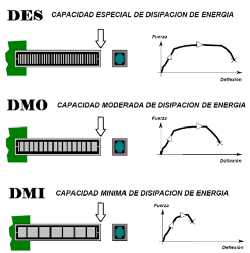

- Materiales principales
- Concreto
Es uno de los principales materiales compuestos empleado en la construcción. Se trata de una mezcla de
cemento (material conglomerante), agua, agregados clasificados en fino (arena) y grueso (grava o
triturado) mediante un ensayo de granulometría; y aditivos (compuestos químicos que permiten mejorar
las propiedades del concreto).
(Euroinnova Formación, 2020)
Figura 1. Materiales para la elaboración de mezclas de concreto.
Fuente: Construyendo seguro (2019)
- Varillas de acero
Barra de acero, con bordes tipo "corrugado" en su superficie para mejorar la adherencia en el concreto
y mantener sin movimiento la estructura con este último. El acero es considerado como un material de
alta resistencia y baja aleación; y posee propiedades mecánicas inherentes que lo hacen un candidato
ideal para la construcción (Staff, 2022).
Figura 2. Varillas de acero.
Fuente: Juancho González Do it Center. (s. f.)
- Pórticos
Los pórticos o también llamados "marcos de portal" son generalmente estructuras de poca altura, que
comprenden columnas y vigas horizontales o inclinadas, conectadas por conexiones resistentes al momento.
(Montajes, Ingeniería & Construcción S.A.S., 2018)
Un pórtico es un sistema estructural formado por vigas, las cuales se apoyan sobre los pilares o columnas
transmitiéndoles la carga.
Figura 3. Pórtico.
Fuente: Redirect Notice. (s. f.).
- Vigas
Una viga es un elemento arquitectónico rígido, generalmente horizontal, proyectado para soportar y
transmitir las cargas transversales y está sometido hacia los elementos de apoyo. (Josefina Torres, s. f.)
Figura 4. Vigas de concreto.
Fuente: Comercializadora DIPACERO (2020).
El diseño de vigas comprende dos acciones básicas:
- El dimensionamiento de su
sección.
Este punto tiene que ver con la dimensión vertical que asegure las mínimas deflexiones consideradas en
el elemento sujeto a cargas de servicio y la dimensión horizontal adecuada.
- La determinación del área de
acero, de refuerzo y complementario.
El acero de refuerzo definirá la resistencia y el tipo de falla del miembro y el acero complementario
el
desempeño del miembro por otros efectos.
- Columnas
Las columnas son los miembros verticales a compresión de los marcos estructurales, que sirven para apoyar
a las vigas cargadas y transmiten las cargas de los pisos superiores hasta la planta baja y después al
suelo, a través de la cimentación (Ing. Hernández, M., 2015).
Figura 5. Columna.
Fuente: Columnas De concreto – Predimensionamiento. (s. f.)
- Método del estado límite de resistencia
También es conocido como método de resistencia última y es una técnica de diseño estructural utilizada
para garantizar que una estructura sea lo suficientemente resistente para soportar todas las cargas a las
que estará expuesta sin llegar a su límite de resistencia (Muñoz, F., & Mendoza, C., 2012).
Básicamente, este método se basa en el comportamiento de los elementos estructurales bajo cargas de falla.
- Prediseño
- Resistencia al fuego
Indica la pérdida de resistencia a tracción del acero de la armadura de un concreto armado y de la
resistencia a compresión del propio concreto, en función de la temperatura alcanzada por el material
(Arq. Vega, L., 2007)
Figura 6. Resistencia al fuego
Fuente: Structuralia (s. f.)
- Capacidad de disipación de
energía.
La disipación de la energía está relacionada directamente con la ductilidad, el cual es uno de los
parámetros más importantes en el diseño y el desempeño sísmico (Ramos, 2021).
Figura 7. Capacidad de disipación de energía

Fuente: Costos del diseño estructural (2015).
- Cargas
Las cargas son aquellas fuerzas que debe soportar una estructura y para las cuales deben proporcionarse
los elementos estructurales (Marketing, 2022). La NSR-10, en su título B describe la forma de cómo deben
evaluarse las cargas a las cuales debe someterse una estructura.
Una carga puede provocar tensiones, deformaciones y desplazamientos en una estructura de acuerdo al tipo
que se presente y entre ellas se pueden mencionar cargas vivas, muertas, de viento, de sismo, entre otras.
Figura 8. Cargas.
Fuente: MECANICA DE MATERIALES. Universidad TecMilenio (2019)